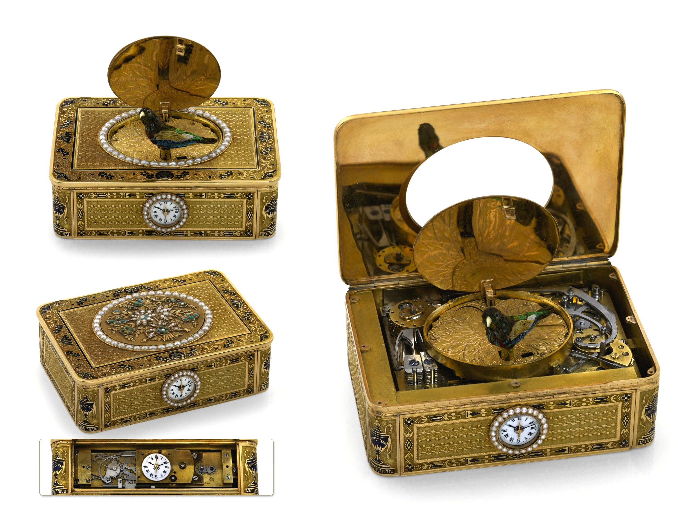

1. The Mechanical Riddle of Intermediate Interval Measurement
Among the exalted pantheon of horological grand complications—encompassing the minute repeater, perpetual calendar, and tourbillon—the split-seconds chronograph (known classically as the chronographe à rattrapante) presents the most formidable kinematic hurdles. While a standard chronograph simply links and disengages a central seconds wheel from the primary going train, a rattrapante must orchestrate two superimposed central hands operating at identical velocity while permitting one hand to be arrested instantaneously and later rejoined without interrupting the underlying timebase.
The fundamental mechanical challenge lies not in stopping the split hand, but in what transpires beneath it while stopped. In traditional 19th-century split-seconds mechanisms, the primary chronograph seconds wheel carries a hardened steel heart-shaped cam upon its arbor. The split-seconds wheel, mounted coaxially directly above it on an independent sleeve, carries a spring-loaded follower arm fitted with a polished ruby roller pin. In normal running mode, this ruby roller sits wedged securely in the deepest cleft of the heart cam, held by a delicate hairpin spring. As the primary chronograph wheel rotates, the heart cam carries the follower arm and split wheel along in perfect angular synchrony.
However, the moment the patron actuates the split-seconds pusher, a pair of pincer-like brake clamps closes upon the perimeter of the split wheel, freezing it in space to allow an intermediate interval to be read. Simultaneously, the primary chronograph wheel must continue rotating forward. In a caliber lacking an isolator mechanism, the heart cam continues spinning beneath the clamped follower arm. The ruby roller is forced out of the heart cleft and begins riding up and down the steep perimeter lobe of the rapidly rotating cam.
2. The Tribological Crisis of Amplitude Drop (Le Fléau du Frottement)
The forced traversal of the follower roller across the rotating heart cam introduces massive parasitic friction directly into the fourth wheel of the gear train. The tension of the split follower spring—calibrated to resist accidental displacement during rapid acceleration—presses the ruby roller against the cam lobe with a contact pressure exceeding 120 megapascals across a microscopic contact patch.
In horological physics, any resistance applied to the chronograph central wheel reflects backward through the coupling clutch into the third wheel, second wheel, and ultimately the escapement. When the split clamp closes on a non-isolated caliber, the kinetic drag robs the escapement balance wheel of essential driving torque. The rotational oscillation angle of the balance—known as the balance amplitude—instantaneously plummets by 35 to 55 degrees.
This sudden amplitude degradation triggers severe isochronal errors. The balance spring no longer breathes symmetrically; the active period of each vibration shifts, and the timepiece immediately begins losing several seconds per minute for as long as the split hand remains clamped. For racing navigators and precision timing laboratories demanding chronometer accuracy, this kinetic drag was an intolerable flaw.
3. Chronometric Performance Matrix: Rattrapante IX Isolator vs Historical Architectures
The quantitative laboratory parameters below compare balance amplitude, kinetic drag torque, and isochronal deviation between Caliber IX and earlier chronograph designs:
| Architecture Classification | Amplitude Drop During Split | Parasitic Drag Torque | Isochronal Rate Shift | Caliper Clearance Tolerance | Collector Service Life |
|---|---|---|---|---|---|
| Rattrapante IX (Dual Column Wheel + Isolator) | < 4 Degrees (Zero Practical Loss) | 0.002 μNm (Near Zero) | +0.2 sec/day Variance | ± 0.003 mm | Multi-Generational Heirloom |
| Traditional Split-Seconds (Non-Isolator) | 38 to 55 Degrees Loss | 0.145 μNm | -12.8 sec/day Variance | ± 0.015 mm | High Cam Wear Over 10 Yrs |
| Standard Cam-Operated Chronograph | 12 to 18 Degrees (Start Drop) | 0.042 μNm | -3.5 sec/day Variance | ± 0.025 mm | Cam Groove Deforms with Use |
| Modular Piggyback Chronograph Module | 25 to 40 Degrees Drop | 0.095 μNm | -7.0 sec/day Variance | ± 0.040 mm | Disposable Module Architecture |

4. The Isolator Solution: Mathematical Decoupling of the Heart Cam
To conquer the amplitude drop phenomenon, the engineers at Rattrapante IX perfected an elegant mechanical isolator assembly located beneath the split wheel bridge. The isolator consists of a star-shaped decoupling wheel mounted concentrically on the split arbor, coupled to an articulated trip lever with an inclined ramp.
When the split-seconds column wheel rotates to close the pincer brake calipers, a dedicated secondary lever shifts the isolator trip ramp forward by 0.22 millimeters. This ramp engages an eccentric pin on the split follower arm, levering the follower upward by exactly 0.08 millimeters. The polished ruby roller is lifted completely out of contact with the rotating heart cam.
Because the ruby roller is physically suspended in air above the cam, the primary chronograph seconds wheel continues spinning with zero frictional contact. The balance wheel maintains its full 310-degree operating amplitude, and rate deviation remains completely flat. When the split pusher is actuated a second time to release the brake calipers, the isolator ramp withdraws first; the ruby roller settles smoothly back into the heart cleft under gentle spring tension, and the split hand catches up to the primary hand in less than 3/100ths of a second.
5. Caliper Clamping Kinematics: Micro-Inertia and Thermal Balance
The design of the pincer brake calipers demands metallurgical mastery. If the caliper jaws clamp with excessive brute force, the microscopic teeth of the split wheel perimeter will suffer permanent indentation over thousands of actuations. Conversely, if the clamping force is too gentle, the inertia of the moving split hand will cause the wheel to slip by several tenths of a millimeter before stopping, introducing unacceptable measurement parallax.
At our 181 Mercer Street atelier, each brake arm is CNC-milled from hardened Swedish spring steel and finished by hand with a gradual tapered cross-section that distributes flexural bending stress evenly along its entire length. The clamping jaws are fitted with microscopic micro-grooves that mesh with the 0.05-millimeter serrations around the circumference of the Glucydur split wheel.
The closing action is commanded by a conical return spring calibrated to deliver precisely 0.45 Newtons of lateral clamping force. This force is sufficient to arrest the 0.012-gram split-seconds hand assembly in under 4 milliseconds with zero bounce, zero slip, and zero structural fatigue over a century of chronometric service.